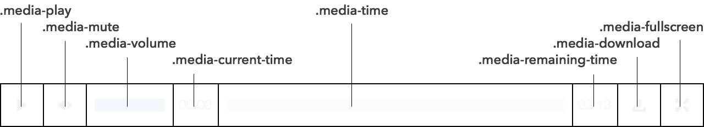
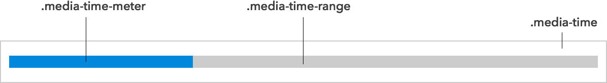

Media Player can be controlled with any pointer or keyboard, whether it’s to play, pause, move across the timeline, mute, unmute, adjust the volume, enter or leave fullscreen, or download the source. Controls are given accessible labels which can be defined in any language.

Media Player is designed for developers who want complete visual control over the component. It’s also for developers who want to hack at or extend the player without any fuss. The player itself does all the heavy lifting; semantic markup, accessibility management, language, fullscreen, text direction, providing pointer-agnostic scrubbable timelines, and lots of other cool sounding stuff.

Add Media Player to your build tool:
npm install mediaplayer
Import the library and create a new Media Player using any media element:
// import media player import MediaPlayer from 'mediaplayer'; // get target from media with controls const $target = document.querySelector('audio[controls], video[controls]'); // assign media player from target (all these options represent the defaults) const player = new MediaPlayer( $target, { prefix: 'media', lang: { play: 'play', pause: 'pause', mute: 'mute', unmute: 'unmute', volume: 'volume', currentTime: 'current time', remainingTime: 'remaining time', enterFullscreen: 'enter fullscreen', leaveFullscreen: 'leave fullscreen', download: 'download' }, svgs: { play: '#symbol-play', pause: '#symbol-pause', mute: '#symbol-mute', unmute: '#symbol-unmute', volume: '#symbol-volume', currentTime: '#symbol-currentTime', remainingTime: '#symbol-remainingTime', enterFullscreen: '#symbol-enterFullscreen', leaveFullscreen: '#symbol-leaveFullscreen', download: '#symbol-download' }, timeDir: 'ltr', volumeDir: 'ltr' } );
The prefix string is used to determine flat class names, which are otherwise:
.media-player { .media-media { /* video or audio element */ } .media-toolbar { .media-control.media-play { .media-symbol.media-play-symbol { /* play svg */ } .media-symbol.media-pause-symbol { /* pause svg */ } } .media-control.media-mute { .media-symbol.media-mute-symbol { /* mute svg */ } .media-symbol.media-unmute-symbol { /* unmute svg */ } } .media-text.media-current-time { /* plain text */ } .media-text.media-remaining-time { /* plain text */ } .media-slider.media-volume { .media-range.media-volume-range { /* full volume */ } .media-meter.media-volume-meter { /* current volume */ } } .media-slider.media-time { .media-range.media-time-range { /* full duration */ } .media-meter.media-time-meter { /* elapsed time */ } } .media-control.media-download { .media-symbol.media-download-symbol { /* download svg */ } } .media-control.media-fullscreen { .media-symbol.media-enterfullscreen-symbol { /* enter full screen svg */ } .media-symbol.media-leavefullscreen-symbol { /* leave full screen svg */ } } } }
Note the convenience classes like media-control, media-symbol, media-slider, media-range and media-range-meter.
These make it easier to style a group of controls or to add new controls.
Because flexbox is used to arrange the controls, the order property can be used to easily rearrange them.
The lang object is used to provide accessible labels each control.
Undefined labels will use English labels.
The svgs object is used to assign SVG sprites to each control in each state.
There may be IE limitations when using external sources with your SVGs, so read
SVG `use` with External Source
for details and solutions.
All DOM generated by Media Player is easily accessible from its instance.
new Media(mediaElement, options);
media: the original media target
toolbar: the toolbar containing all the media controls
play: the play button
playSymbol: the play image
pauseSymbol: the pause image
mute: the mute button
muteSymbol: the image seen before clicking mute
unmuteSymbol: the image used after clicking mute
currentTime: the current time element
currentTimeText: the current time text node
remainingTime: the remaining time element
remainingTimeText: the remaining time text node
time: the time slider
timeRange: the time slider range
timeMeter: the time slider meter
volume: the volume slider
volumeRange: the volume slider range
volumeMeter: the volume slider meter
download: the download button
downloadSymbol: the download image
enterFullscreenSymbol: the full screen enter image
leaveFullscreenSymbol: the full screen leave image
Volume and time controls sliders allow you to drag volume up or down and time backward or forward. By default, these sliders work left-to-right, meaning that dragging the slider to the right advances the control. This behavior is expected in a right-to-left environment as well.
These control can be configured to work in any direction — right-to-left (rtl), top-to-bottom (ttb), bottom-to-top (btt) — with the following configuration:
new MediaPlayer(audioElement, { volumeDir: 'btt', // (volume will drag bottom to top) timeDir: 'ttb' // (time will drag top to bottom) });
Media Player automatically assigns ARIA roles and labels to its controls, which always reflect the present state of the media player. Special slider roles are used for volume and time which are then given helpful keyboard controls.
Three new events are dispatched by
Media Player.
playchange dispatches whenever play or pause toggles.
timechange dispatches more rapidly than timeupdate.
canplaystart dispatches the first time media can play through.
Media Player works in all browsers supporting Audio, Video, and SVG elements. This includes Chrome, Edge, Firefox, Internet Explorer 9+, Opera, and Safari 6+. Older versions of Edge and Internet Explorer may need additional assistance loading SVGs from an external URL. Read SVG `use` with External Source for details and solutions.
When focused on the play button or the timeline slider, pressing spacebar or enter / return toggles the playback of the media.
When focused on the mute button or the volume slider, pressing spacebar or enter / return toggles the muting of the media.
When focused on the play button or the timeline slider, pressing right arrow or up arrow moves the time forward, while pressing left arrow or down arrow moves the time backward. Time is moved 10 second, unless shift is also pressed, in which case it moves 30 seconds.
When focused on the mute button or the volume slider, pressing right arrow or up arrow raises the volume, while pressing left arrow or down arrow lowers the volume. Volume is moved 1%, unless shift is also pressed, in which case it moves 10%.
Media Player and its icons use the CC0 “No Rights Reserved” license.